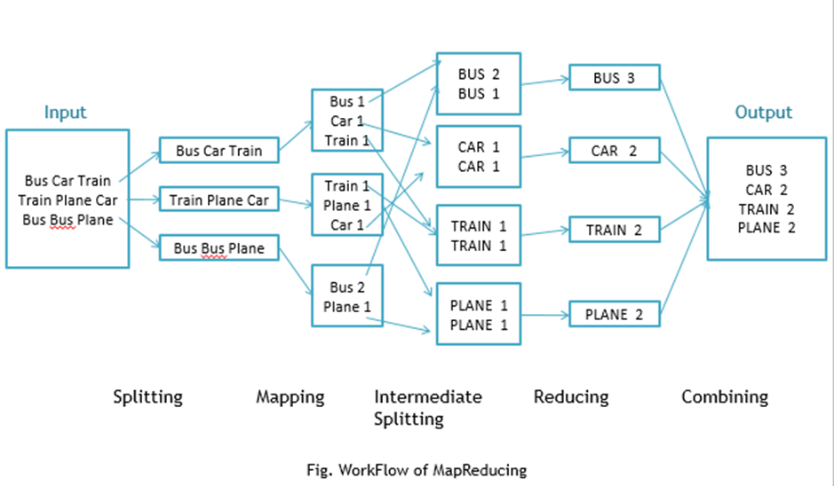

<!DOCTYPE html>
<html lang="du">
<head>
<meta charset="utf-8"/>
<title>Big Data System Design</title>
<meta name="author" content="((link (:type mailto :path roelant.ossewaarde@hu.nl :format bracket :raw-link mailto:roelant.ossewaarde@hu.nl :application nil :search-option nil :begin 1 :end 57 :contents-begin 36 :contents-end 54 :post-blank 1 :parent #0) Roelant Ossewaarde) en  (link (:type mailto :path jos.vanreenen@hu.nl :format bracket :raw-link mailto:jos.vanreenen@hu.nl :application nil :search-option nil :begin 60 :end 106 :contents-begin 90 :contents-end 104 :post-blank 0 :parent #0) Jos van Reenen) , B 2019-2020)"/>
<style type="text/css">
.underline { text-decoration: underline; }
</style>
<link rel="stylesheet" href="./reveal.js/css/reveal.css"/>

<link rel="stylesheet" href="./reveal.js/css/theme/simple.css" id="theme"/>

<link rel="stylesheet" href="./personalization.css"/>

<!-- If the query includes 'print-pdf', include the PDF print sheet -->
<script>
    if( window.location.search.match( /print-pdf/gi ) ) {
        var link = document.createElement( 'link' );
        link.rel = 'stylesheet';
        link.type = 'text/css';
        link.href = './reveal.js/css/print/pdf.css';
        document.getElementsByTagName( 'head' )[0].appendChild( link );
    }
</script>
</head>
<body>
<div class="reveal">
<div class="slides">
<section id="sec-title-slide" data-background="images/huhl15.jpg"><h1>Big Data System Design</h1><h3>Casus: actuele systemen</h3><p><small><a href="mailto:roelant.ossewaarde@hu.nl">Roelant Ossewaarde</a> en <a href="mailto:jos.vanreenen@hu.nl">Jos van Reenen</a>, B 2019-2020</small></p>
</section>

<section>
<section id="slide-org842d1a5">
<h2 id="org842d1a5"><span class="section-number-2">1</span> Map-reduce</h2>
<p>
Multi-core computers kunnen efficiënt processen in parallel
afwerken. Ze moeten dan wel op de juiste manier aangestuurd
worden. Eén van de toepassingen is <b>data-intensive scalabale computing
(DISC)</b>: het verwerken van grote datasets. Google ontwikkelde een
belangrijk algoritme: MapReduce. Yahoo ontwikkelde een architectuur
(<a href="https://hadoop.apache.org/">Hadoop</a>) waarin MapReduce efficiënt geïmplementeerd kan worden.
</p>

</section>
<section id="slide-org22971ab">
<h3 id="org22971ab"><span class="section-number-3">1.1</span> Map / Reduce komt uit de wereld van Functional Programming</h3>
<p>
Voorbeeld-code van for-loop vs map (in Rust):
</p>

<pre><code class="rust" data-noescape>
fn multiply_with_for_loop(input_numbers : &Vec<i32>) {
    // vermenig alle elementen met een constante factor met een for-loop
    let mut output_numbers = vec![0,0,0,0,0];
    for i in 0..input_numbers.len() {
      <mark>output_numbers[i] = input_numbers[i] * 10;</mark>
    }
    println!("Output met for-loop: {:?}", output_numbers);
    // verwachtte output: Output met for-loop: [10, 20, 30, 40, 50]
}

fn multiply_with_map(input_numbers : &Vec<i32>) {
    let input_numbers_iterator = input_numbers.iter();
    <mark>let output_numbers :Vec<i32> = input_numbers_iterator.map(|i| i*10).collect();</mark>
    println!("Output met map-loop: {:?}", output_numbers);
    // verwachtte output: Output met map-loop: [10, 20, 30, 40, 50]
}

fn main() {
    let input_numbers = vec![1,2,3,4,5];
    multiply_with_for_loop(&input_numbers);
    multiply_with_map(&input_numbers);
}
</code></pre>

</section>
<section id="slide-orgc0639dc">
<h3 id="orgc0639dc"><span class="section-number-3">1.2</span> Map / Reduce komt uit de wereld van Functional Programming</h3>
<p>
Voorbeeld-code van for-loop vs reduce (in Rust):
</p>

<pre><code class="rust" data-noescape>
fn sum_with_for_loop (input_numbers : &Vec<i32>) {
    let mut output_sum = 0;
    for i in 0..input_numbers.len() {
<mark>	output_sum = output_sum + input_numbers[i];</mark>
    }
    println!("Output sum met for-loop: {:?}", output_sum);
    // verwachtte output: Output sum met for-loop: 15
    }

fn sum_with_reduce (input_numbers : &Vec<i32>) {
    let input_numbers_iterator = input_numbers.iter();
<mark>    let output_sum : i32 = input_numbers_iterator.sum();</mark>
    println!("Output sum met reduce: {:?}", output_sum);
    // verwachtte output: Output sum met reduce: 15
}

fn main() {
    let input_numbers = vec![1,2,3,4,5];
    sum_with_for_loop(&input_numbers);
    sum_with_reduce(&input_numbers);
}

</code></pre>


</section>
<section id="slide-org2ca77fb">
<h3 id="org2ca77fb"><span class="section-number-3">1.3</span> Architectuur van een MapReduce implementatie</h3>

<div class="figure">
<p>
</p>
</div>

</section>
<section id="slide-org922d11e" class="p-smaller">
<h3 id="org922d11e"><span class="section-number-3">1.4</span> Workflow voorbeeld van Word Count</h3>

<div class="figure">
<p>
</p>
</div>

<p>
(bron: <a href="https://dzone.com/articles/word-count-hello-word-program-in-mapreduce">https://dzone.com/articles/word-count-hello-word-program-in-mapreduce</a>)
</p>

</section>
<section id="slide-org9e09d8b">
<h3 id="org9e09d8b"><span class="section-number-3">1.5</span> Voorbeeld-run van een word count mapper</h3>
<p>
Zie <a href="https://github.com/roelanto/tcifbigdata">https://github.com/roelanto/tcifbigdata</a> voor een voorbeeldimplementatie met werkende code. 
</p>

<p>
Mapper: <i>emit</i> een 1 voor ieder woord dat gevonden wordt. 
</p>

<pre>
class WordCountMapper extends Mapper<LongWritable, Text, Text, IntWritable> {

    public void map(LongWritable Key,
		    Text value,
		    Context context) throws IOException, InterruptedException {
	String[] tokens = value.toString().split("\\s");
	for (String s : tokens) {
	    context.write(new Text(s), new IntWritable(1));
	}
    }
}
</pre>

</section>
<section id="slide-orga6c3d21">
<h3 id="orga6c3d21"><span class="section-number-3">1.6</span> Voorbeeld-run van een word count reducer</h3>
<p>
Reducer: <i>emit</i> de som van alle gevonden '1'-en.
</p>

<pre>
class WordCountReducer extends Reducer<Text, IntWritable, Text, IntWritable> {
	public void reduce(Text key,
			   Iterable<IntWritable> values,
			   Context context) throws IOException, InterruptedException {
		int sum = 0;
		for (IntWritable i : values) {
			sum += i.get();
		}
		context.write(key, new IntWritable(sum));
	}
}
</pre>


</section>
</section>
<section>
<section id="slide-org2e70c84">
<h2 id="org2e70c84"><span class="section-number-2">2</span> Lambda, Kappa, Kudu</h2>
<div class="outline-text-2" id="text-2">
</div>
</section>
<section id="slide-org51404cf">
<h3 id="org51404cf"><span class="section-number-3">2.1</span> OLAP vs OLTP</h3>
<table border="2" cellspacing="0" cellpadding="6" rules="groups" frame="hsides">


<colgroup>
<col  class="org-left" />

<col  class="org-left" />

<col  class="org-left" />
</colgroup>
<thead>
<tr>
<th scope="col" class="org-left">&#xa0;</th>
<th scope="col" class="org-left">OLTP</th>
<th scope="col" class="org-left">OLAP</th>
</tr>

<tr>
<th scope="col" class="org-left">Characteristics</th>
<th scope="col" class="org-left">Transactional RDBMS</th>
<th scope="col" class="org-left">Data Warehouse</th>
</tr>
</thead>
<tbody>
<tr>
<td class="org-left">Data Content</td>
<td class="org-left">Current values</td>
<td class="org-left">Historical, summarized, calculated data</td>
</tr>

<tr>
<td class="org-left">Data Organization</td>
<td class="org-left">Application by application</td>
<td class="org-left">Subject areas across enterprise (departmental)</td>
</tr>

<tr>
<td class="org-left">Nature of Data</td>
<td class="org-left">Dynamic</td>
<td class="org-left">Static until refreshed</td>
</tr>

<tr>
<td class="org-left">Data Structure</td>
<td class="org-left">Normalised ( &gt;= 3NF )</td>
<td class="org-left">Star-schema / Dimensional</td>
</tr>

<tr>
<td class="org-left">Data Manipulation</td>
<td class="org-left">Updated on a field-by-field basis</td>
<td class="org-left">Access only, usually no direct update</td>
</tr>

<tr>
<td class="org-left">Usage</td>
<td class="org-left">Highly structured, repetitive processing (Clerical User)</td>
<td class="org-left">Highly structured, analytical processing (Knowledge User)</td>
</tr>

<tr>
<td class="org-left">Response Time</td>
<td class="org-left">Critical (Sub-Second/seconds)</td>
<td class="org-left">Non-critical (seconds/minutes)</td>
</tr>

<tr>
<td class="org-left">Updates vs. Reports</td>
<td class="org-left">Real-time Updates, Batch Reporting</td>
<td class="org-left">Batch Updates, Real-time Reporting</td>
</tr>
</tbody>
</table>

</section>
<section id="slide-org3135d1f">
<h3 id="org3135d1f"><span class="section-number-3">2.2</span> Lambda architectuur</h3>

<div id="org83b1cd4" class="figure">
<p>
</p>
<p><span class="figure-number">Figure 3: </span>Lambda architectuur</p>
</div>

<ol class="org-ol">
<li><a id="org5580362"></a>Batch-layer:<br />
<ol>
<li>Master data set. "Immutable": data verandert niet.</li>
<li>Precompute alle "views".</li>
<li>Traditioneel: opgeslagen met HDFS, verwerkt dmv Map/Reduce</li>

</ol>
</li>
</ol>

</section>
<section id="slide-org5b240d1">
<h3 id="org5b240d1"><span class="section-number-3">2.3</span> Lambda architectuur</h3>

<div id="org426c634" class="figure">
<p>
</p>
<p><span class="figure-number">Figure 4: </span>Lambda architectuur</p>
</div>


<ol class="org-ol">
<li><a id="org13c0438"></a>Speed-layer<br />
<ol>
<li>Streaming data / micro-batches</li>
<li>Traditioneel: Apache Spark en Stormm.</li>

</ol>
</li>
</ol>

</section>
<section id="slide-org89cc4c7">
<h3 id="org89cc4c7"><span class="section-number-3">2.4</span> Lambda architectuur</h3>

<div id="org4c66348" class="figure">
<p>
</p>
<p><span class="figure-number">Figure 5: </span>Lambda architectuur</p>
</div>


<ol class="org-ol">
<li><a id="org98a5656"></a>Serving-layer:<br />
<ol>
<li>Geen "ruwe" data, gebruikt views van batch- en speed-layer.</li>
<li>Bijvoorbeeld een SQL-engine op een traditioneel filesysteem, of HBase of Apache Impala.</li>

</ol>
</li>
</ol>

</section>
<section id="slide-org6cd2174">
<h4 id="org6cd2174"><span class="section-number-4">2.4.1</span> Voordelen van Lambda</h4>
<ol>
<li>Verbinding van verschillende producten, elk met hun unieke sterke kanten.</li>
<li>Schaalbaar via de batch-layer.</li>
<li>Realtime performance via de speed-layer.</li>

</ol>

</section>
<section id="slide-orgfa522d7">
<h4 id="orgfa522d7"><span class="section-number-4">2.4.2</span> Nadelen van Lambda</h4>
<ol>
<li>Complexiteit:
<ol>
<li>Veel verschillende delen.</li>
<li>Restatement is lastig.</li>
<li>Twee code-bases tegelijk.</li>
<li>Fout-afhandeling is moeilijker, door alle verschillende delen.</li>

</ol></li>

</ol>

</section>
<section id="slide-orgd4158e9">
<h3 id="orgd4158e9"><span class="section-number-3">2.5</span> Kudu: snelle analytics op snel-veranderende data.</h3>
<ol>
<li>HDFS excels at:
<ul>
<li>Batch ingest only (e.g. hourly)</li>
<li>Efficiently scanning large amounts of data (analytics)</li>

</ul></li>
<li>HBase excels at:
<ul>
<li>Efficiently finding and writing individual rows</li>
<li>Making data mutable</li>

</ul></li>
<li>Gaps exist when these properties are needed
simultaneously</li>

</ol>


<div id="orgb7730f3" class="figure">
<p>
</p>
<p><span class="figure-number">Figure 6: </span>Kudu architectuur</p>
</div>


</section>
<section id="slide-orgb6a41bc">
<h3 id="orgb6a41bc"><span class="section-number-3">2.6</span> Kudu: snelle analytics op snel-veranderende data.</h3>
<ol>
<li><b>High throughput</b> for big scans. Goal:Within 2x of Parquet</li>
<li><b>Low-latency</b> for short accesses. Goal: 1ms read/write on SSD</li>
<li>Database-like semantics (initially single-row ACID)•</li>
<li>Relational data model:
<ol>
<li>SQL queries are easy</li>
<li>“NoSQL” style scan/insert/update (Java/C++ client)</li>

</ol></li>

</ol>


<div id="org28c95c8" class="figure">
<p>
</p>
<p><span class="figure-number">Figure 7: </span>Kudu architectuur</p>
</div>


<ol>
<li>HDFS excels at:
<ul>
<li>Batch ingest only (e.g. hourly)</li>
<li>Efficiently scanning large amounts of data (analytics)</li>

</ul></li>
<li>HBase excels at:
<ul>
<li>Efficiently finding and writing individual rows</li>
<li>Making data mutable</li>

</ul></li>
<li>Gaps exist when these properties are needed
simultaneously</li>

</ol>


</section>
<section id="slide-org31f606b">
<h3 id="org31f606b"><span class="section-number-3">2.7</span> Aspecten van Kudu</h3>
<div class="outline-text-3" id="text-2-7">
</div>
<ol class="org-ol">
<li><a id="org55cdbe2"></a>Table-oriented storage<br />
<ol>
<li>Table has SQL/RDBMS-like schema
<ol>
<li>Primary key (one or many columns)</li>
<li>NO secondary indexes</li>
<li>Finite number of columns (unlike HBase, Cassandra)</li>
<li>Each column has name and type</li>

</ol></li>
<li>Horizontally partitioned (range, hash) – called tablets. 
<ol>
<li>Tablets typically have 3 or 5 replicas</li>

</ol></li>
<li>CRUD</li>
<li>Integrated with Impala, MapReduce, Spark and counting</li>
<li>Zeer fout-tolerant, door gebruik van <a href="http://thesecretlivesofdata.com/raft/">het RAFT-protocol.</a></li>

</ol>
</li>
</ol>

</section>
</section>
<section>
<section id="slide-orgf5d8b6e">
<h2 id="orgf5d8b6e"><span class="section-number-2">3</span> Case-study:  Netflix</h2>
<p>
Zie <a href="https://www.infoq.com/articles/netflix-migrating-stream-processing">de video</a>. 
</p>
</section>
</section>
</div>
</div>
<script src="./reveal.js/js/reveal.js"></script>

<script>
// Full list of configuration options available here:
// https://github.com/hakimel/reveal.js#configuration
Reveal.initialize({
slideNumber:true,
width:"80%",
height:"100%",
multiplex: {
    secret: '', // null if client
    id: '', // id, obtained from socket.io server
    url: '' // Location of socket.io server
},

// Optional libraries used to extend on reveal.js
dependencies: [
{ src: 'reveal.js/plugin/reveald3.js', async: true }, { src: 'plugin/quiz/js/quiz.js', async: true, callback: function() { prepareQuizzes({}); } }, { src: 'reveal.js/plugin/highlight/highlight.js', async: true },
 { src: './reveal.js/lib/js/classList.js', condition: function() { return !document.body.classList; } },
 { src: './reveal.js/plugin/markdown/marked.js', condition: function() { return !!document.querySelector( '[data-markdown]' ); } },
 { src: './reveal.js/plugin/markdown/markdown.js', condition: function() { return !!document.querySelector( '[data-markdown]' ); } },
 { src: './reveal.js/plugin/zoom-js/zoom.js', async: true, condition: function() { return !!document.body.classList; } },
 { src: './reveal.js/plugin/notes/notes.js', async: true, condition: function() { return !!document.body.classList; } }]
});
</script>
</body>
</html>
